<meta charset="utf-8">
<title>BGM_22 — how the input streams are drawn</title>
<style>
  :root {
    --ground: #f9f9f7;
    --surface: #fcfcfb;
    --ink: #0b0b0b;
    --ink2: #52514e;
    --muted: #898781;
    --grid: #e1e0d9;
    --baseline: #c3c2b7;
    --dspn: #2a78d6;
    --ispn: #eb6834;
    --fs: #147a55;      /* darker text-step of the FS aqua */
    --fs-mark: #1baf7a;
    --shared: #4a3aa7;
    --shared-wash: #eceafd;
    --warn-wash: #fdf3e4;
  }
  html { color-scheme: light; }
  body {
    background: var(--ground);
    color: var(--ink);
    /* DejaVu first: guaranteed on Linux, matches the figures' typeface, and
       has every math glyph this page uses (Firefox+Linux resolves system-ui
       to fonts that sometimes lack them) */
    font-family: "DejaVu Sans", system-ui, -apple-system, "Segoe UI", sans-serif;
    line-height: 1.55;
    margin: 0;
    padding: 2.2rem 1rem 4rem;
  }
  main { max-width: 60rem; margin: 0 auto; }
  h1 {
    font-size: 1.7rem; line-height: 1.2; text-wrap: balance;
    margin: 0 0 0.4rem;
  }
  h2 {
    font-size: 1.22rem; margin: 2.8rem 0 0.4rem; text-wrap: balance;
    padding-top: 1.2rem; border-top: 1px solid var(--grid);
  }
  h3 { font-size: 1.02rem; margin: 1.6rem 0 0.3rem; }
  p, li { max-width: 78ch; }
  .lede { color: var(--ink2); max-width: 78ch; margin: 0.2rem 0 0; }
  .stamp {
    color: var(--muted); font-size: 0.82rem; letter-spacing: 0.02em;
    text-transform: uppercase; margin-bottom: 0.6rem;
  }
  .toc {
    background: var(--surface); border: 1px solid var(--grid);
    border-radius: 8px; padding: 0.9rem 1.2rem; margin: 1.4rem 0 0;
    font-size: 0.92rem;
  }
  .toc b { font-size: 0.8rem; text-transform: uppercase; letter-spacing: 0.04em; color: var(--muted); }
  .toc ol { margin: 0.4rem 0 0; padding-left: 1.3rem; }
  .toc a { color: var(--ink2); text-decoration: none; }
  .toc a:hover, .toc a:focus { color: var(--shared); text-decoration: underline; }
  a { color: var(--shared); }
  figure {
    margin: 1.2rem 0; background: var(--surface);
    border: 1px solid var(--grid); border-radius: 8px;
    padding: 0.8rem; overflow-x: auto;
  }
  figure img { max-width: 100%; height: auto; display: block; margin: 0 auto; }
  figcaption {
    color: var(--ink2); font-size: 0.86rem; max-width: 88ch;
    margin: 0.6rem auto 0; padding: 0 0.2rem;
  }
  figcaption b, caption b { color: var(--ink); }
  code, pre {
    font-family: "DejaVu Sans Mono", ui-monospace, "Cascadia Code", Consolas, monospace;
    font-size: 0.88em;
  }
  code { background: var(--surface); border: 1px solid var(--grid); border-radius: 4px; padding: 0.05em 0.3em; }
  pre {
    background: var(--surface); border: 1px solid var(--grid);
    border-radius: 8px; padding: 0.8rem 1rem; overflow-x: auto;
    line-height: 1.5; max-width: 78ch;
  }
  pre code { background: none; border: none; padding: 0; }
  .key {
    border-left: 3px solid var(--shared); background: var(--shared-wash);
    border-radius: 0 8px 8px 0; padding: 0.7rem 1rem; margin: 1.2rem 0;
    max-width: 74ch;
  }
  .key p { margin: 0.3rem 0; }
  .off-banner {
    border-left: 3px solid var(--ispn); background: var(--warn-wash);
    border-radius: 0 8px 8px 0; padding: 0.7rem 1rem; margin: 1.2rem 0;
    max-width: 74ch;
  }
  table {
    border-collapse: collapse; margin: 1rem 0; font-size: 0.9rem;
    background: var(--surface); border: 1px solid var(--grid);
    border-radius: 8px;
  }
  caption {
    caption-side: top; text-align: left; color: var(--ink2);
    font-size: 0.86rem; padding: 0.4rem 0.2rem 0.5rem; max-width: 88ch;
  }
  .table-scroll { overflow-x: auto; }
  th, td {
    padding: 0.4rem 0.8rem; text-align: left;
    border-bottom: 1px solid var(--grid);
  }
  th {
    font-size: 0.78rem; text-transform: uppercase; letter-spacing: 0.04em;
    color: var(--muted); font-weight: 600;
  }
  td.num, th.num { text-align: right; font-variant-numeric: tabular-nums; }
  tr:last-child td { border-bottom: none; }
  .t-dspn { color: var(--dspn); font-weight: 600; }
  .t-ispn { color: var(--ispn); font-weight: 600; }
  .t-fs { color: var(--fs); font-weight: 600; }
  .t-shared { color: var(--shared); font-weight: 600; }
  .foot { color: var(--muted); font-size: 0.84rem; margin-top: 3rem; border-top: 1px solid var(--grid); padding-top: 1rem; }
  :focus-visible { outline: 2px solid var(--shared); outline-offset: 2px; }
</style>

<main>
<p class="stamp">BGM_22 · snapshot 2026-08-11 · not a living document — rerun <code>make_figures.py</code> if it drifts</p>
<h1>How the input streams are drawn — a visual walkthrough of model_v07.md §7.4</h1>
<p class="lede">
Every unsimulated input in the v07 model — cortex onto the striatal microcircuit,
the missing GABA from striatum outside the cube, cortex onto thal/GPe/STN — is a
<em>stream</em>: a precomputed matrix of spike counts. This page walks through how one is
drawn, on toy examples small enough to draw every neuron, and then shows for each
case that the real generator (<code>spike_input_cortex.py</code>) produces exactly the
statistics the toy explains. Toy numbers are deliberately exaggerated
(shared fraction 0.2 instead of 0.014) so overlap is visible; every section carries
the real numbers alongside. Figures and tables are numbered and cited from the
text; all shown values are measured, seeded and reproducible
(<code>results.json</code>, <code>bench.json</code>).
</p>
<nav class="toc">
<b>Contents</b>
<ol>
  <li><a href="#what">What a stream is, and what it must reproduce</a></li>
  <li><a href="#steps">The four steps, and what is fixed vs redrawn</a></li>
  <li><a href="#case1a">Case 1a — cortex → striatum: one axon pool per region</a></li>
  <li><a href="#case1b">Case 1b — missing GABA: a geometric source cloud</a></li>
  <li><a href="#case1c">Case 1c — CorticalInputs: shared + private split</a></li>
  <li><a href="#mod">Step 2b — the shared rate modulation (currently off)</a></li>
  <li><a href="#perf">Time and memory at real scale</a></li>
</ol>
</nav>

<h2 id="what">1 · What a stream is, and what it must reproduce</h2>
<p>
One stream serves one <code>(pre, post)</code> pair. Row <em>i</em> is receiver <em>i</em>,
column <em>t</em> is one <code>dt = 0.1 ms</code> bin, and the entry is a <strong>count</strong>:
how many of the pair's presynaptic neurons spiked into receiver <em>i</em> in that bin
(Fig. 1). No spike trains, no individual synapses — a single mean weight turns
counts into current later.
</p>
<figure id="fig1">
  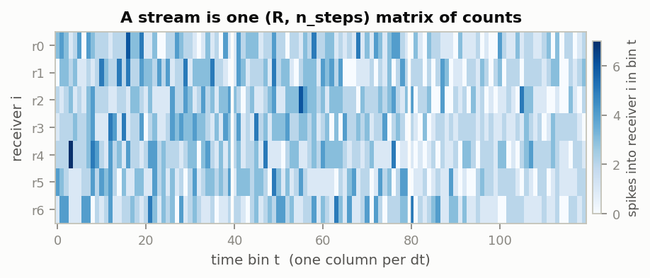
  <figcaption><b>Figure 1.</b> What a stream is: one (R, n_steps) matrix of
  counts. Toy example with R = 7 receivers × 120 bins, drawn as
  Binomial(8, p(t)) with p(t) from the first three TRs of the real dlPFC rate
  series (rescaled). White vertical lines mark TR boundaries. The real caudate
  dlPFC→dSPN stream has the same structure at 486 × 7 161 000
  (310 TRs × 23 100 bins).</figcaption>
</figure>
<p>
The stream stands in for <code>N</code> neurons firing at probability
<code>p(t) = rate(t)·dt/1000</code> per bin, whose afferent pools overlap between two
receivers by a fraction <code>f</code>, and which may themselves be pairwise correlated
at <code>ρ</code>. Three statistics then follow with no freedom, and the generator is
checked against them at build time (<code>stream_target_statistics</code>,
<code>check_stream_statistics</code>):
</p>
<pre><code>mean = N · p(t)
Fano = (1 − p) · ((1 − ρ) + N·ρ)          → 1 − p       when ρ = 0
corr = (f·(1 − ρ) + N·ρ) / ((1 − ρ) + N·ρ) → f           when ρ = 0</code></pre>
<div class="key">
<p><strong>The one principle behind all three constructions:</strong> realise the presynaptic
pool explicitly and let <em>overlap</em> produce the correlations — never compute a
correlation and impose it. (The pre-2026-08-07 code imposed it through a Gaussian
copula and delivered corr 0.00009 where 0.014 was intended, Fano 1922 where 1 was.)</p>
</div>

<h2 id="steps">2 · The four steps, and what is fixed vs redrawn</h2>
<p>
Every stream is produced by the same four-step procedure; only step 1 differs
between the three cases, and steps 2–4 are literally shared code. Table 1
summarises what is decided once and what is redrawn every bin.
</p>
<div class="table-scroll"><table id="tab1">
<caption><b>Table 1.</b> The four steps of the generator and their time
structure. "Once per stream" means once for the entire run; the per-bin steps
are what fills the matrix of Fig. 1.</caption>
<tr><th>step</th><th>what happens</th><th>how often</th><th>constant or varying</th></tr>
<tr><td>1 — fix the pool</td><td>decide what the presynaptic pool <em>is</em> (a size M, a source cloud, a shared/private split)</td><td>once per stream — except 1a: once per cortical region, all receiver types together</td><td>constant for the whole run</td></tr>
<tr><td>2 — probability</td><td>p(t) = rate·dt/1000, optionally × a shared modulation (2b)</td><td>every bin</td><td>staircase (cortical) or flat (GABA); one trace per stream, shared by all receivers</td></tr>
<tr><td>3 — draw counts</td><td>the actual random counts, receivers coupled through what they share</td><td>every bin</td><td>varying — this is the data</td></tr>
<tr><td>4 — check</td><td>measured mean/Fano/corr vs the closed-form targets; raises on mismatch</td><td>once, on the first 20 000 bins</td><td>—</td></tr>
</table></div>

<h2 id="case1a">3 · Case 1a — cortex → striatum: one axon pool per region</h2>
<p>
Think of one cortical region, say dlPFC. Its axons crossing the striatal tissue form
one pool of <strong>M</strong> axons, and every receiver —
<span class="t-dspn">dSPN</span>, <span class="t-ispn">iSPN</span> or
<span class="t-fs">FS</span> alike — owns a random subset of it:
<code>N_i = round(proportion(region) · N_cortical_inputs[type])</code> axons.
The <span class="t-shared">shared input</span> between two receivers is simply the
axons in <em>both</em> subsets. All figures of this section use one toy pool,
specified in Table 2 next to the real dlPFC numbers it stands for.
</p>
<div class="table-scroll"><table id="tab2">
<caption><b>Table 2.</b> The toy pool of Figs. 2–4 against the real caudate
dlPFC pool it miniaturises. The toy exaggerates the shared fraction
(0.20 vs 0.014) and the per-bin probability (0.25 vs 5·10⁻⁴) so that overlap and
counts are visible in a drawing; all structural relations (M = N<sub>SPN</sub>/f,
cross-type f from the same pool) are identical.</caption>
<tr><th>quantity</th><th class="num">toy</th><th class="num">real (caudate dlPFC)</th></tr>
<tr><td>pool size M</td><td class="num">40</td><td class="num">275 000</td></tr>
<tr><td>N per receiver (dSPN / iSPN / FS)</td><td class="num">8 / 8 / 4</td><td class="num">3850 / 3850 / 1540</td></tr>
<tr><td>receivers R (dSPN / iSPN / FS)</td><td class="num">3 / 2 / 2</td><td class="num">486 / 485 / 29</td></tr>
<tr><td>f — SPN↔SPN (= N<sub>SPN</sub>/M)</td><td class="num">0.20</td><td class="num">0.014</td></tr>
<tr><td>f — FS↔SPN (= √(N<sub>FS</sub>N<sub>SPN</sub>)/M)</td><td class="num">0.141</td><td class="num">0.00885</td></tr>
<tr><td>f — FS↔FS (= N<sub>FS</sub>/M)</td><td class="num">0.10</td><td class="num">0.0056</td></tr>
<tr><td>bins per TR</td><td class="num">40</td><td class="num">23 100</td></tr>
<tr><td>mean p per bin</td><td class="num">0.25</td><td class="num">5·10⁻⁴ (5 Hz at dt = 0.1 ms)</td></tr>
</table></div>
<figure id="fig2">
  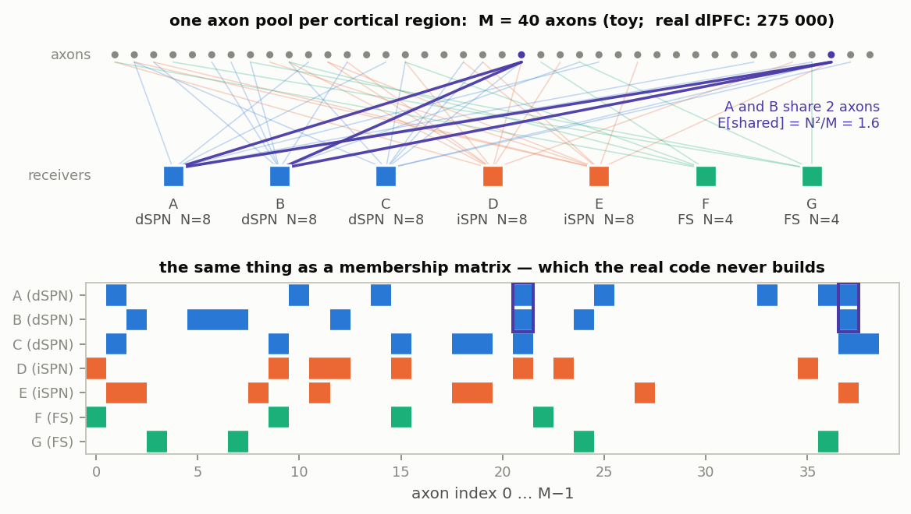
  <figcaption><b>Figure 2.</b> Step 1a as a picture: the toy pool of Table 2,
  with each receiver's membership drawn explicitly
  (<code>rng.choice(M, N, replace=False)</code>, seeded). <em>Top:</em> bipartite
  view; the two axons that receivers A and B happen to share are highlighted in
  violet (their expected overlap is N²/M = 1.6). <em>Bottom:</em> the same
  connectivity as a membership matrix — which the real code never builds; Fig. 4
  shows why it does not have to.</figcaption>
</figure>
<div class="key">
<p><strong>Why M = N/f realises the shared fraction.</strong> Two SPNs each picking
N axons uniformly from M share N²/M axons on average — a fraction N/M of their
pools. Kincaid's measurement says that fraction is 0.014, so the pool size is
<em>defined</em> by it: <code>M = round(N_eff(dSPN)/0.014)</code>. For dlPFC:
3850/0.014 = 275 000 axons. f is never imposed anywhere — M is chosen so overlap
produces it.</p>
<p><strong>Why once per region, not per stream.</strong> All three receiver types sample
the <em>same physical axons</em>, so the three streams are drawn together against one
pool. Drawn separately, a dSPN and an iSPN in the same tissue would share nothing.
The cross-type shared fractions then follow from M instead of being free parameters
(Table 2, rows f).</p>
</div>
<p>
Per bin, the draw needs no membership matrix
(<code>simulate_cortical_axon_pool_streams_to_memmap</code>):
</p>
<pre><code>k(t)   ~ Binomial(M, p(t))                        # how many pool axons fire — ONCE, shared
c_i(t) ~ Hypergeometric(N_i, M − N_i, k(t))       # how many of them receiver i owns</code></pre>
<p>
The hypergeometric is the marbles question — <em>of the k firing axons, how many
land in my N_i?</em> — and because the subsets are uniform random, that distribution
is exact without knowing which axons are whose. All coupling between receivers comes
from the shared k(t): a bin where the pool fires a lot is a high bin for
<em>everyone</em>. Figure 3 shows this over six TRs of the real drive.
</p>
<p>
<strong>What the hypergeometric distribution is.</strong> It answers the urn
question <em>without replacement</em>: an urn holds M marbles, N_i of them yours
and M − N_i not; someone draws k marbles; the number c of <em>your</em> marbles
among the k is hypergeometric, with
</p>
<pre><code>P(c) = C(N_i, c) · C(M − N_i, k − c) / C(M, k)      # C(n, k): binomial coefficient
mean = k · N_i / M
var  = k · (N_i/M) · (1 − N_i/M) · (M − k)/(M − 1)</code></pre>
<p>
It is the without-replacement sibling of the Binomial: a Binomial would ask the
same question with each drawn marble put back, and has the larger variance
k·(N_i/M)·(1 − N_i/M) — the factor (M − k)/(M − 1) &lt; 1 is the correction for
drawing without replacement (an axon either fired this bin or it didn't; it
cannot be "drawn twice"). In our setting the urn is the region's axon pool, your
marbles are the N_i axons receiver i owns, and the k drawn marbles are the axons
that fired in this bin.
</p>
<p>
<strong>The NumPy function.</strong>
<code>rng.hypergeometric(ngood, nbad, nsample)</code> samples exactly this:
it returns the number of "good" items in a sample of <code>nsample</code> drawn
without replacement from a population of <code>ngood + nbad</code>. The
generator calls
<code>rng.hypergeometric(N_i, M − N_i, k)</code> with the bin-wise k(t)
broadcast to shape (R, n) — one independent draw per receiver and bin, all
conditioned on the same shared k(t) of that bin, which is precisely where the
receiver correlation comes from.
</p>
<div class="key">
<p><strong>The c_i(t) are the stream.</strong> Stack the count rows c_i(t) of all R
receivers of one type and you have exactly the (R, n_steps) matrix of Fig. 1 —
that matrix is the stream for one (cortical region, striatal type) pair, written
to the cache as <code>receiver_counts_&lt;region&gt;_&lt;type&gt;.dat</code>. There is one
such stream per pair: for the caudate, 6 contributing regions × 3 types = 18
cortical streams. A region's three streams are <em>drawn</em> together — they
share the same k(t), which is where the cross-type correlation lives — but
<em>stored</em> as three separate matrices. k(t) itself is scaffolding: it is
never written anywhere.</p>
</div>
<figure id="fig3">
  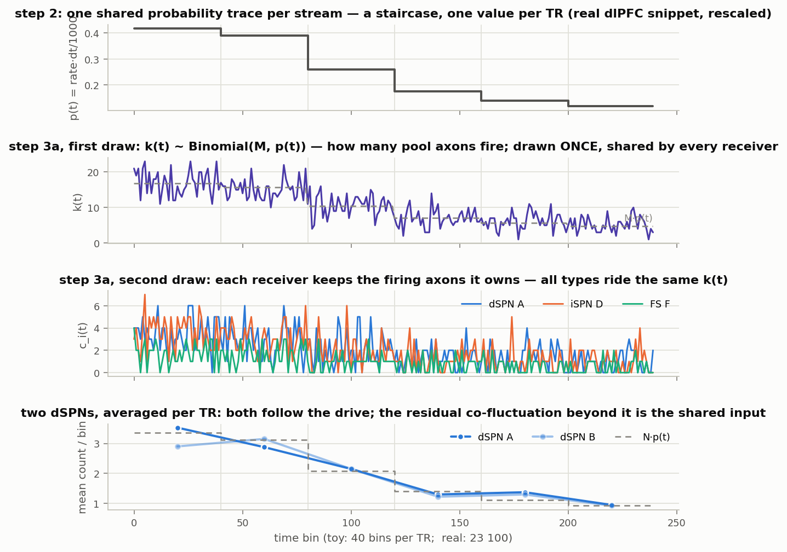
  <figcaption><b>Figure 3.</b> One draw of the toy pool (Table 2, explicit
  construction of Fig. 2) over six TRs. <em>Panel 1:</em> the drive — the first six
  TRs of the real dlPFC rate series, rescaled to mean p = 0.25; one value per TR,
  repeated for every bin inside it (real: 23 100 repeats). <em>Panel 2:</em> the
  shared draw k(t) ~ Binomial(40, p(t)) around its mean M·p(t) (dashed).
  <em>Panel 3:</em> counts of one receiver per type — all ride the same k(t).
  <em>Panel 4:</em> the two dSPNs A and B averaged per TR: both track N·p(t)
  (dashed); the co-fluctuation beyond it is the shared input.</figcaption>
</figure>

<h3>The real generator produces the same streams — measured</h3>
<p>
Everything above used the <em>explicit</em> construction: all 40 axons were
simulated as individual spike trains and each receiver summed the axons of its
fixed membership set from Fig. 2. That is the ground truth the diagrams are drawn
from — and it is <strong>not what the real code does</strong>. The real generator
skips the membership entirely and draws the hypergeometric shortcut above. This
subsection is the proof that the shortcut is legitimate: both constructions are run
side by side on the <em>same toy pool</em>, and their statistics are compared
against the closed-form targets of section 1.
</p>
<p>
Setup: two simulations of the toy pool of Table 2 (M = 40, the same seven
receivers), each T = 400 000 bins long. Unlike Fig. 3 the drive is held
<em>constant</em> at p = 0.25 per bin (dt = 1 ms, i.e. a 250 Hz rate) — a
stationary drive is needed so that mean, Fano factor and pairwise correlation can
be measured over the whole run and compared to the single-bin targets.
</p>
<ol>
  <li><strong>Explicit pool (fixed membership)</strong> — every axon an independent
  Bernoulli(p) spike train; receiver i's count is the sum over the axons of its
  membership set, exactly the one drawn in Fig. 2. 400 000 bins of ground truth.</li>
  <li><strong>Real generator (hypergeometric)</strong> — the actual
  <code>simulate_cortical_axon_pool_streams_to_memmap</code>, called with identical
  M, N_i, R and rate. No membership exists anywhere in this run.</li>
</ol>
<figure id="fig4">
  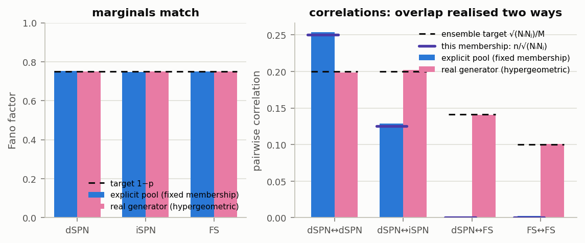
  <figcaption><b>Figure 4.</b> The two constructions of the same toy pool
  (Table 2), T = 400 000 bins at constant p = 0.25. <em>Left:</em> measured Fano
  factor per receiver type (blue: explicit pool; magenta: real generator; dashed:
  the target 1 − p = 0.75). Means (not shown) agree with N·p to &lt; 0.1 % for
  both. <em>Right:</em> measured pairwise correlation for four receiver pairs.
  Two targets are drawn per pair: the <em>ensemble</em> value
  √(N<sub>i</sub>N<sub>j</sub>)/M (dashed black), and what <em>this particular
  membership</em> of Fig. 2 implies, n/√(N<sub>i</sub>N<sub>j</sub>) with n the
  number of actually-shared axons (violet tick). The blue and magenta bars
  <em>should</em> differ here — each matches its own target; see text.</figcaption>
</figure>
<p>
Reading Fig. 4: the <em>marginals</em> (left) are identical — both constructions
give every receiver exactly Binomial(N, p) counts. The <em>correlations</em>
(right) differ, and that difference is the entire point of the panel. With a fixed
membership, a specific pair's correlation is set by the overlap it actually has:
A and B happen to share n = 2 axons, so their counts correlate at
n/√(N·N) = 2/8 = 0.25; A and D share 1 (→ 0.125); A↔F and F↔G share 0 (→ ≈ 0).
The real generator has no fixed membership — its per-bin re-draw makes
<em>every</em> pair sit at the ensemble average √(N<sub>i</sub>N<sub>j</sub>)/M
(0.20, 0.20, 0.141, 0.10). Each construction matches its own analytic prediction
to within sampling error; they differ from <em>each other</em> because at M = 40 a
single membership scatters widely around the ensemble.
</p>
<p>
Why this is harmless at real scale: for a real pair, the shared-axon count n is
hypergeometric and tightly concentrated, for every pair class. Between two SPNs
(dSPN↔dSPN or dSPN↔iSPN — their N are equal): n = 54 ± 7 axons, so a specific
pair's f is 0.0140 ± 0.0019 (±13 %). FS↔SPN: n = 21.6 ± 4.6, f = 0.0089 ± 0.0019
(±21 %). FS↔FS: n = 8.6 ± 2.9, f = 0.0056 ± 0.0019 (±34 %). The relative spread
grows as the pools get smaller, but the absolute scatter is ±0.002 for every pair
class — and each stream's statistics average over many pairs (≈118 000 dSPN↔dSPN
pairs, ≈236 000 dSPN↔iSPN, 406 even for FS↔FS), pulling the measured correlation
onto the ensemble value either way. In the toy the same scatter is as large as
the value itself: a toy SPN pair has n = 1.6 ± 1.0 (f = 0.20 ± 0.13) and a toy
dSPN↔FS pair n = 0.8 ± 0.8 (f = 0.14 ± 0.14) — the memberships of Fig. 2 simply
landed at 2, 1, 0 and 0 shared axons — which is why Fig. 4 makes the distinction
visible at all. The real code therefore draws from the ensemble directly and
never stores who owns which axon.
</p>
<p>
Regions stay separate: each has its own pool, so streams of different regions are
independent within a bin and co-fluctuate only through their BOLD-derived rate
series. Note the FS caveat: this derivation gives FS <em>less</em> overlap than SPNs
(Table 2), while Ramanathan 2002 / Choi 2018 report higher cortical convergence
onto FS — recorded as <code>TODO.md</code> §26.
</p>

<h2 id="case1b">4 · Case 1b — missing GABA: a geometric source cloud</h2>
<p>
The simulated cube is far smaller than the connection kernels reach, so most of a
neuron's striatal GABA afferents sit <em>outside</em> the lattice. Each of the 7
connected pairs (dSPN→dSPN, dSPN→iSPN, FS→dSPN, FS→FS, FS→iSPN, iSPN→dSPN,
iSPN→iSPN) gets a compensation stream. Here the shared fraction cannot be one
number — it must <em>fall with distance</em> between two receivers, because
nearby receivers draw from the same surrounding tissue and distant ones do not.
The fitted kernels that define "surrounding" are shown in Fig. 5.
</p>
<figure id="fig5">
  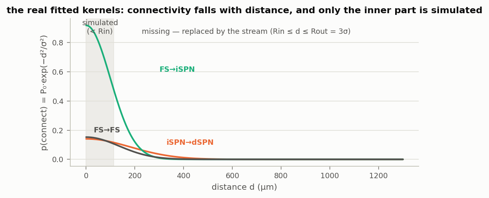
  <figcaption><b>Figure 5.</b> Three of the seven real fitted kernels
  (<code>fitted_params.json</code>; p(d) = P₀·exp(−d²/σ²)), real parameters, no
  toy scaling. Shaded: inside Rin ≈ 114 µm connections are simulated explicitly;
  from Rin to Rout = 3σ they are replaced by the stream.</figcaption>
</figure>
<p>
Step 1b (<code>build_geometric_source_pools</code>) makes the unsimulated neurons
<em>actual points</em>: virtual sources scattered at the real density (divided by
<code>multiplicity</code> — one virtual source stands for 10 real neurons) in a box
that extends Rout beyond the receivers, connected to every receiver with the
<em>model's own kernel</em>. A receiver's pool is whatever sources it connected to
(Fig. 6); the size of that pool is the receiver's <strong>degree</strong>
deg<sub>i</sub>, its realised afferent count. The degree is not a parameter — it
falls out of the construction (density × kernel), scattering around the kernel
integral: in the toy, mean 29.4 ± 5.3 sources per receiver against an expected
30.1; in the real 3D run of Table 3, deg × multiplicity ≈ 481 afferents against
E_outer ≈ 500. The shared fraction between two receivers is the overlap of their
pools, normalised by their degrees — falling with distance automatically
(Fig. 7).
</p>
<figure id="fig6">
  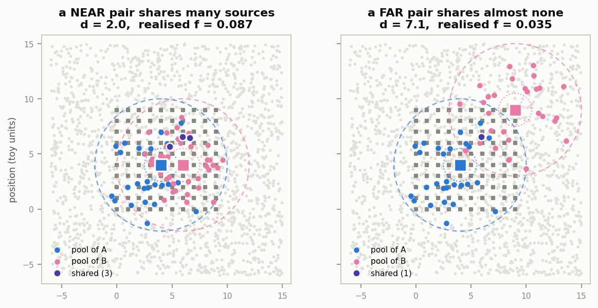
  <figcaption><b>Figure 6.</b> Step 1b on a 2D toy (10 × 10 receivers, spacing 1;
  kernel P₀ = 0.35, σ = 3; Rin = 1.5, Rout = 6; ~1760 sources at density 4 per
  unit²; the real construction is 3D and is checked in Table 3). Grey dots:
  source cloud. Dashed circles: the Rin/Rout annulus of the two highlighted
  receivers. <em>Left:</em> a near pair (d = 2) and its shared sources (violet);
  <em>right:</em> the same receiver A against a far one (d = 7.1). Nothing ever
  computes f(d) — it <em>is</em> the overlap.</figcaption>
</figure>
<figure id="fig7">
  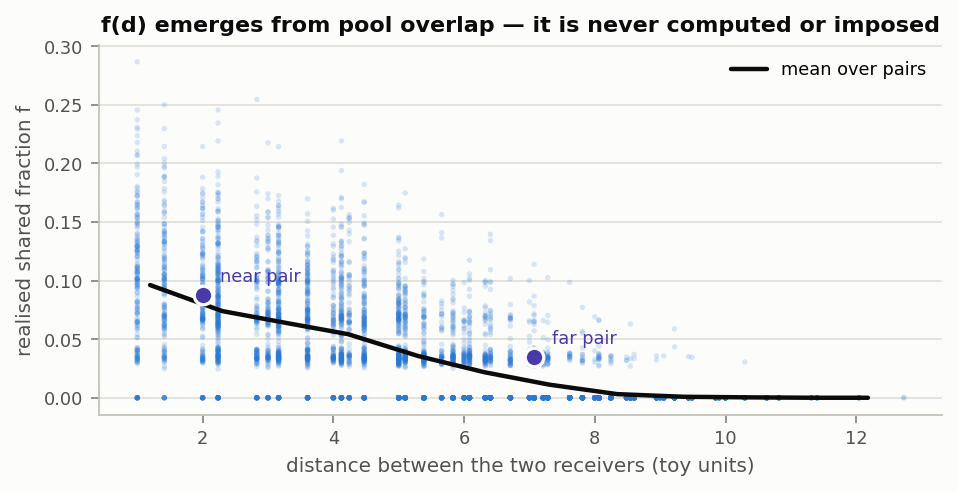
  <figcaption><b>Figure 7.</b> Realised shared fraction
  f = n<sub>shared</sub>/√(deg<sub>i</sub>·deg<sub>j</sub>) against pair distance
  for all 4 950 receiver pairs of the toy cloud of Fig. 6 (blue dots; black line:
  mean per 1-unit distance bin). Here n<sub>shared</sub> is the number of sources
  in both pools and deg<sub>i</sub> is receiver i's degree — the size of its
  pool, i.e. how many blue (or magenta) dots Fig. 6 shows for it; toy mean
  29.4 ± 5.3. The geometric mean √(deg<sub>i</sub>·deg<sub>j</sub>) is the right
  normaliser because the correlation of two Binomial counts sharing n of their
  N<sub>i</sub> and N<sub>j</sub> afferents is n/√(N<sub>i</sub>N<sub>j</sub>)
  (cf. case 1a). Example: the near pair of Fig. 6 shares 3 sources with degrees
  28 and 42, so f = 3/√(28·42) = 0.087. The two example pairs of Fig. 6 are
  marked. The decay is inherited entirely from the kernel geometry.</figcaption>
</figure>
<p>Per bin, spikes are thrown at the whole cloud and scattered
(<code>simulate_receiver_counts_geometric_to_memmap</code>):</p>
<pre><code>n_events(t) ~ Binomial(S·k_mult, p)         # all real neurons the cloud stands for
source of each event ~ Uniform{0 … S−1}     # which virtual source spiked
c_i(t) = # events whose source feeds i      # one bincount over (receiver, bin)</code></pre>
<p>
Line by line. <strong>Line 1 — how many spikes, in total.</strong> The cloud
stands for S·k_mult real neurons (each virtual source represents k_mult = 10 of
them), and each fires with probability p in this bin. Instead of simulating them
one by one, a single Binomial draw yields n_events(t), the total number of
spikes the <em>whole cloud</em> emits in this bin — the 1b analogue of the
shared k(t) of case 1a.
</p>
<p>
<strong>Line 2 — which source emitted each spike.</strong> Each of those
n_events spikes must have come from some neuron. All neurons in the cloud are
statistically identical — same constant rate, no structure among them — so the
emitting source of any given spike is equally likely to be any of the S sources:
the code draws one uniform random source index per event
(<code>rng.integers(0, S, size=n_events)</code>, with replacement — the same
source can emit several spikes in one bin, as it should, since it stands for
k_mult neurons). Nothing caps the repeats at k_mult, though: strictly, a source
can be assigned more spikes in a bin than the neurons it stands for. At these
per-bin probabilities that tail is vanishingly rare, and where the per-pair
clamp on k_mult (model_v07.md §7.4, step 1b) reaches 1 it is one neuron spiking
twice within a single 0.1 ms bin — the within-bin cousin of the double-spiking
that independently drawn bins already permit <em>across</em> bins, since the
streams have no refractoriness anywhere (input-streams README §4.3). No
per-source rate is ever drawn; the uniform assignment <em>is</em> the
distribution of the total over the sources.
</p>
<p>
<strong>Line 3 — from sources to receivers.</strong> Now every event is a
(source, bin) pair, and a spike of source s must be delivered to <em>every</em>
receiver whose pool contains s — this is why the connectivity is stored
source-major (source → list of its receivers). Each event is expanded into its
(receiver, bin) pairs and one single <code>bincount</code> over the flattened
index accumulates them all into the (R, n) count block; that one array operation,
instead of a loop over receivers, is what makes the construction affordable. A
spike whose source sits in two pools increments both receivers in the same bin —
the shared-source markers of Fig. 8, and the correlation of Figs. 6–7, are
exactly this happening.
</p>
<p>
As in case 1a, the stacked c_i(t) rows are the stream — here one per
(pre type → post type) pair, e.g. <code>receiver_counts_iSPN_dSPN.dat</code>,
7 streams per loop.
</p>
<figure id="fig8">
  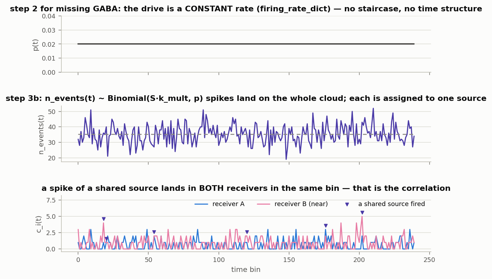
  <figcaption><b>Figure 8.</b> One draw of the toy cloud of Fig. 6 — S = 1764
  sources at k_mult = 1 (in the toy each virtual source stands for a single
  neuron; the real construction uses k_mult = 10), receiver degrees ≈ 29 —
  over 240 bins at constant p = 0.02. <em>Panel 1:</em> unlike the cortical
  streams, the missing-GABA drive is a <em>constant</em> rate
  (<code>firing_rate_dict</code>: dSPN 25, iSPN 33, FS 10.5 Hz) — p(t) is flat,
  all time structure is the draw itself. <em>Panel 2:</em> total events on the
  cloud, n_events(t) ~ Binomial(S·k_mult, p), around its mean
  S·k_mult·p = 1764 · 0.02 ≈ 35.3 (dashed). <em>Panel 3:</em> counts of the near
  pair A, B of Fig. 6: deg<sub>A</sub> = 28, so A's counts average
  deg<sub>A</sub>·p = 28 · 0.02 = 0.56 per bin; deg<sub>B</sub> = 42, mean
  0.84 per bin. Violet markers flag bins in which one of their 3 shared sources
  fired — such a spike lands in <em>both</em> receivers in the same bin, and
  that is the correlation.</figcaption>
</figure>
<p>
Table 3 is the real-code check for this case: the actual 3D generator run at real
parameters, measured against the closed-form targets. "Reduced lattice" means
only this: the receivers are all 125 sites of a 5 × 5 × 5 grid at the real
lattice spacing (d ≈ 22.8 µm), every site treated as a dSPN receiver. It is
<em>not</em> a shrunken microcircuit in which 125 iSPNs happen to fit — no type
assignment is made at all. The presynaptic iSPNs are not lattice neurons in this
construction anyway: they are the virtual source cloud, drawn at the real iSPN
volume density (0.485 · 84 900 ≈ 41 204 per mm³) in the box around the
receivers. That is why using every site as a receiver is harmless: receivers are
passive observers of the cloud and never interact, so each receiver's degree
depends only on kernel, density and annulus (all real here), and each pair's
overlap only on the pair's distance. Cutting 486 → 125 receivers reduces compute
and restricts which pair distances occur — nothing else; the targets in Table 3
are computed from this run's own realised degrees and overlaps, so the
comparison is self-consistent.
</p>
<div class="table-scroll"><table id="tab3">
<caption><b>Table 3.</b> Real-code check for case 1b:
<code>build_geometric_source_pools</code> +
<code>simulate_receiver_counts_geometric_to_memmap</code> for iSPN→dSPN with real
parameters (kernel P₀ = 0.141, σ = 255 µm; density 41 204 iSPN/mm³;
Rin/Rout = 0.114/1.201 mm; multiplicity 10 → 63 828 sources), receivers = all
125 sites of a 5 × 5 × 5 grid at the real lattice spacing (see text),
50 000 bins at dt = 0.1 ms, rate 33 Hz. Targets from
<code>stream_target_statistics</code> at the realised mean degree
N̄ = 480.8 afferents and the realised mean shared fraction. The full-size run
differs only in scale (486 receivers, 72 971 sources; section 7). The realised
mean degree is additionally required to match the kernel integral E_outer within
20 % — a genuine prediction, since nothing imposes it.</caption>
<tr><th>statistic</th><th class="num">target</th><th class="num">measured</th></tr>
<tr><td>mean count per bin (N̄·p)</td><td class="num">1.587</td><td class="num">1.590</td></tr>
<tr><td>Fano factor (1 − p)</td><td class="num">0.997</td><td class="num">1.038</td></tr>
<tr><td>pairwise corr (mean realised f)</td><td class="num">0.0387</td><td class="num">0.0382</td></tr>
</table></div>

<h2 id="case1c">5 · Case 1c — CorticalInputs: shared + private split</h2>
<p>
The BG populations (thal, gpe_arky, gpe_cp, stn; 100 neurons each) have no
geometry and one population per stream, so the pool is the simplest possible:
split each receiver's N afferents into a part all receivers share and a part
each owns alone (<code>simulate_receiver_counts_homogeneous_to_memmap</code>;
Fig. 9).
</p>
<pre><code>n_shared  = round(f · N)                    # ONE pool for everybody
n_private = N − n_shared                    # per receiver
S(t)   ~ Binomial(n_shared,  p(t))          # drawn once, added to every receiver
P_i(t) ~ Binomial(n_private, p(t))          # per receiver
c_i(t) = S(t) + P_i(t)                      # exactly Binomial(N, p);  corr = f</code></pre>
<p>
Again the stacked c_i(t) rows are the stream, one per (cortical region, BG
population) pair — 6 regions × 4 populations = 24 streams for the caudate loop.
</p>
<figure id="fig9">
  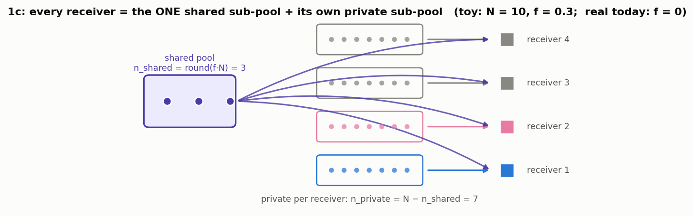
  <figcaption><b>Figure 9.</b> Step 1c on a toy with N = 10 afferents per
  receiver and f = 0.3: 3 shared + 7 private. The correlation is f because a
  fraction f of each receiver's count is <em>literally the same random
  number</em>.</figcaption>
</figure>
<figure id="fig10">
  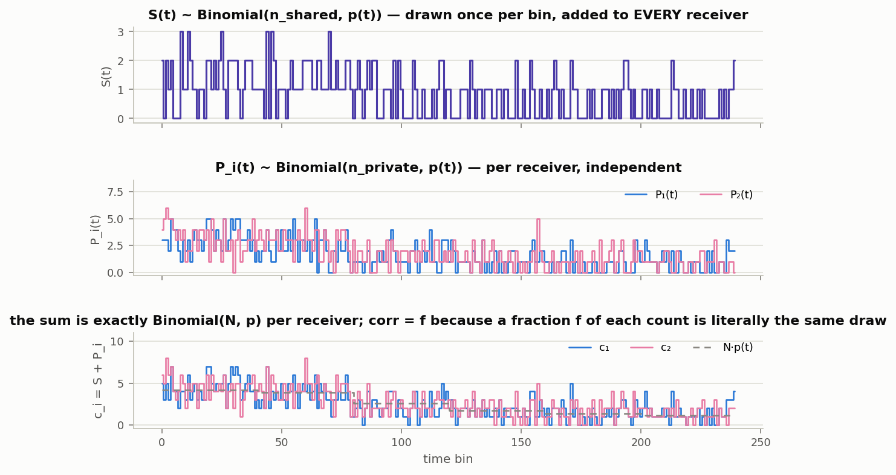
  <figcaption><b>Figure 10.</b> One draw of the toy of Fig. 9 over six TRs,
  driven by the same real-dlPFC staircase as Fig. 3 (mean p = 0.25).
  <em>Panel 1:</em> the shared draw S(t). <em>Panel 2:</em> the private draws of
  receivers 1 and 2, independent. <em>Panel 3:</em> their sums; wherever S(t) is
  high, <em>both</em> counts are lifted together.</figcaption>
</figure>
<div class="table-scroll"><table id="tab4">
<caption><b>Table 4.</b> Real-code check for case 1c:
<code>simulate_receiver_counts_homogeneous_to_memmap</code> at the toy parameters
of Fig. 9 (R = 4, N = 10, f = 0.3), 400 000 bins at constant p = 0.25. Targets
are the closed forms of section 1.</caption>
<tr><th>statistic</th><th class="num">target</th><th class="num">measured</th></tr>
<tr><td>mean count per bin</td><td class="num">2.5</td><td class="num">2.495</td></tr>
<tr><td>Fano factor</td><td class="num">0.75</td><td class="num">0.753</td></tr>
<tr><td>pairwise corr</td><td class="num">0.30</td><td class="num">0.303</td></tr>
</table></div>
<p>
In the shipped model every entry of <code>ci.shared_fraction_dict</code> is
<strong>0</strong> — certainly wrong physically, but unmeasured; kept as a visible
parameter (<code>input_streams/README.md</code> §4.6). At f = 0 the shared pool of
Fig. 9 is empty and receivers are independent given the drive. N per stream is
<code>round(proportion · N_total)</code> with N_total = 1000 (thal) / 500 (others),
driven by the same seven per-region rate series as case 1a.
</p>

<h2 id="mod">6 · Step 2b — the shared rate modulation</h2>
<div class="off-banner">
<strong>Currently switched off.</strong> Every presynaptic correlation target in
the shipped configuration is 0 (<code>mc.correlation_dict</code>,
<code>mc.cortical_correlation</code>), so this whole step is skipped and
p(t) = p_drive(t) — pending the scan of <code>TODO.md</code> §25, because these
values set the simulated BOLD amplitude directly. This section exists so the
machinery is understood before it is turned on.
</div>
<h3>What we want: correlated spike counts</h3>
<p>
In cases 1a–1c the presynaptic neurons fire independently of each other, given
the drive. In reality two cortical (or striatal) neurons are themselves weakly
correlated, and the standard measure of that is the pairwise
<em>spike-count correlation</em>. Spelled out precisely: there are two neurons.
Chop time into consecutive counting windows of length <strong>T_meas</strong>,
i.e. <strong>m = T_meas / dt</strong> bins each (in the example running through
this section: m = 200 bins of dt = 1 ms, so 200 ms per window). Within a
single bin a neuron either spikes or it doesn't — one coin flip with
probability p(t) per bin. For window number w, let K₁(w) be the <em>total</em>
spike count of neuron 1 in that window — the sum of its m coin flips,
typically ~20 spikes at the running example's p = 0.1 — and K₂(w) the same
for neuron 2. Over many
windows this gives two series of window totals, and the spike-count
correlation is the correlation between them:
</p>
<pre><code>r_sc = corr(K₁(w), K₂(w))        across windows w</code></pre>
<p>
So "count" always means the total over a whole window, never a single bin; in
the derivation below, K stands for one such window total of one neuron. What
this step must achieve is a chosen value of r_sc: the two count series should
rise and fall together, to a controlled degree.
</p>
<p>
Three numbers therefore have to be fixed up front. The target
<strong>r_sc</strong> itself; the window <strong>T_meas</strong> it was
measured at — required because the same mechanism produces a
<em>different</em> measured correlation at every counting window, so a target
without its window is meaningless (the derivation ends at exactly this point,
Fig. 13); and a correlation timescale <strong>τ_c</strong> — how slowly the
shared fluctuation drifts (both times in ms).
</p>
<h3>From correlation to covariance and variance</h3>
<p>
The definition of r_sc dictates what has to be computed. The covariance of the
two window counts,
Cov(K₁, K₂) = E[(K₁ − E[K₁]) · (K₂ − E[K₂])], is the average <em>product of
their deviations</em> from their respective means: positive when the two counts
tend to be high together and low together, zero when their fluctuations are
unrelated. The correlation is just its normalised form,
r_sc = Cov(K₁, K₂) / (SD(K₁)·SD(K₂)) — and since the two neurons are
statistically identical, that is Cov divided by the common variance:
</p>
<pre><code>r_sc = Cov(K₁, K₂) / Var(K)</code></pre>
<p>
So the whole task reduces to two quantities — the covariance between the two
count series and the variance of one of them — both computed under whatever
mechanism couples the neurons. The next two subsections fix that mechanism;
the derivation then computes Cov(K₁, K₂) and Var(K) for it.
</p>
<h3>The mechanism: a shared multiplicative modulation</h3>
<p>
The coupling is deliberately simple: all presynaptic neurons of the stream
share one multiplicative modulation <strong>Mod(t)</strong> of their firing
probability,
</p>
<pre><code>p(t) = p_drive(t) · Mod(t)          # p_drive(t) = rate(t)·dt/1000, exactly as in step 2a</code></pre>
<p>
with Mod(t) fluctuating around 1: mean exactly 1 (the mean drive is untouched),
variance <strong>σ²</strong> — the single unknown of this whole section, solved
for at the end of the derivation — and autocorrelation timescale τ_c. Every
neuron waxing and waning together is what correlates their spike counts.
</p>
<p>
<strong>What p_drive and p̄ are.</strong> p_drive(t) = rate(t)·dt/1000 is the
<em>unmodulated</em> per-bin firing probability, straight from the drive — the
same quantity every case used in step 2a (the staircase of Fig. 3 for cortical
streams, the flat line of Fig. 8 for missing GABA). Step 2b multiplies Mod(t)
onto it. <strong>p̄</strong> is simply its average over the stretch being
generated — a single number (in the running example the drive is constant at
100 Hz, so p̄ = p_drive = 0.1).
</p>
<p>
One simplification, used from here on: for the calibration the drive is taken
at its mean, p_drive(t) → p̄, so p(t) = p̄·Mod(t) throughout the derivation.
That is exact for a constant drive (the running example) and is precisely the
simplification the code itself makes —
<code>solve_modulation_amplitude</code> receives only p̄, never the full
p_drive(t).
</p>
<h3>Generation: the pipeline of Figure 11</h3>
<p>
Before deriving anything, here is how such a Mod(t) is actually built — the
derivation leans on the pieces, so they should be concrete first. Given a
variance σ², the modulation is generated in five lines — one per panel of
Fig. 11:
</p>
<pre><code>ξ(t) ~ N(0, 1)                               # white noise, one value per bin      (Fig. 11, panel 1)
z(t) = a·z(t−1) + √(1 − a²)·ξ(t)             # AR(1) filter: adds the memory τ_c   (panel 2)
u(t) = Φ(z(t))                               # Φ = standard normal CDF → uniform   (panel 3)
Mod(t) = GammaInv(u(t); mean 1, var σ²)      # Gamma inverse CDF → the modulation  (panel 4)
p(t) = p_drive(t) · Mod(t)                   # the modulated probability           (panel 5)</code></pre>
<p>
Line by line. <strong>ξ(t)</strong> is fresh Gaussian white noise — no memory,
no structure. <strong>z(t)</strong> is an <em>AR(1) process</em>
("autoregressive of order 1"): each value is the previous one times the memory
coefficient <strong>a = exp(−dt/τ_c)</strong>, plus scaled fresh noise. That
single recursion gives z(t) unit variance and an autocorrelation that decays as
a<sup>k</sup> = e<sup>−k·dt/τ_c</sup> — a trace that wanders slowly on the
timescale τ_c instead of jumping independently every bin.
<strong>u(t) = Φ(z(t))</strong> pushes z through the standard normal cumulative
distribution function, turning a Gaussian value into one uniform on (0, 1)
while keeping the time correlation. <strong>Mod(t)</strong> pushes u through
the <em>inverse</em> CDF of a Gamma distribution chosen to have mean 1 and
variance σ² — the standard trick for "keep the correlation, change the
distribution": the result inherits z's slow time structure but is Gamma
distributed, hence strictly positive at any σ² (a Gaussian modulation could
make p(t) negative). The last line multiplies it onto the drive. Cost is one
trace per stream, O(n_steps) — not one per receiver.
</p>
<figure id="fig11">
  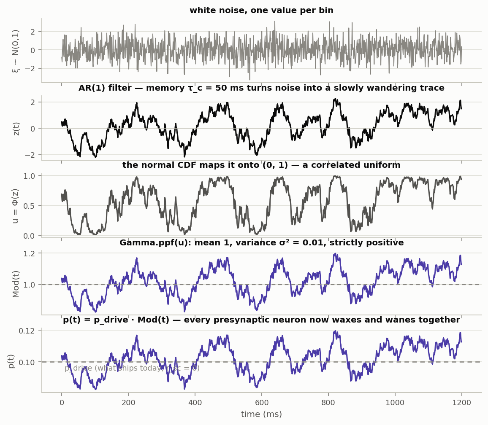
  <figcaption><b>Figure 11.</b> The five pipeline lines above, one panel each,
  over 1.2 s. Parameters: target r_sc = 0.05 at T_meas = 200 ms, τ_c = 50 ms,
  constant 100 Hz drive at dt = 1 ms (so p_drive = 0.1 and p̄ = 0.1). Panel 1:
  the white noise ξ(t). Panel 2: the AR(1) trace z(t) — same randomness, now
  wandering on the τ_c = 50 ms timescale. Panel 3: u(t) = Φ(z(t)) ∈ (0, 1).
  Panel 4: Mod(t), Gamma distributed around its mean 1 (dashed) — drawn with
  σ² = 0.007, the value the calibration below solves for exactly these
  parameters. Panel 5: p(t) = p_drive·Mod(t) fluctuating around p_drive = 0.1
  (dashed) — the value every receiver's draw then uses in step 3.</figcaption>
</figure>
<p>
The one thing the pipeline does not fix is <strong>σ²</strong>: how hard the
modulation may wobble so that the target r_sc comes out at the window T_meas.
That is the calibration. It is a single analytic computation, done once before
any bins are drawn — nothing is simulated for it; the derivation only
<em>anticipates</em> the statistics the pipeline above will produce — and its
result σ² is then handed to the pipeline, which builds the one Mod(t) shared
by all presynaptic neurons of the stream. Deriving it is the rest of this
section.
</p>
<h3>Deriving r_sc(T), then solving for σ²</h3>
<p>
The plan from above: compute Cov(K₁, K₂) and Var(K) under the shared
modulation, with p(t) = p̄·Mod(t). A window count K varies for two reasons:
</p>
<p>
<em>The private part.</em> Even with the modulation path held fixed, the coin
flips themselves are random. Variances of independent contributions add, and
one bin's flip has variance p(t)·(1 − p(t)) ≈ p̄ (p is small), so m bins
contribute variance ≈ m·p̄ — the first intermediate result,
<strong>(R1): Var(coin-flip part) = m·p̄</strong>. That is why this part
"grows with the window":
counting longer means summing more independent coin flips, and the absolute
spread of a sum grows linearly in the number of terms. Crucially, the two
neurons flip their coins <em>independently</em>, so this part contributes to
each neuron's variance but not to their covariance.
</p>
<p>
<em>The shared part.</em> The expected count, given the modulation path, is
E[K | Mod] = Σ_t p̄·Mod(t). Split each term around the modulation's mean of 1,
Mod(t) = 1 + (Mod(t) − 1): the sum becomes m·p̄ + D, where
<strong>D = p̄·Σ_t (Mod(t) − 1)</strong> — that is where "Mod(t) − 1" comes from — is the
surplus or deficit of expected spikes in <em>this particular window</em>,
caused by the modulation having wandered above or below 1 during it.
</p>
<p>
<em>From the expectation back to the actual counts.</em> E[K | Mod] is only
the <em>expected</em> count given the modulation path — and it is the same
for both neurons, E[K₁ | Mod] = E[K₂ | Mod] = m·p̄ + D, because both are
driven by the same p(t). The actual counts scatter around this expectation:
their coin flips do not land exactly on their expected total. Give that
leftover a name — <em>define</em>
</p>
<pre><code>noise₁ = K₁ − E[K₁ | Mod]       # how far neuron 1's flips landed from their expected total
noise₂ = K₂ − E[K₂ | Mod]       # same for neuron 2</code></pre>
<p>
Rearranging is then an identity, not an assumption — "actual = expected given
the path + leftover" — result <strong>(R2)</strong>:
</p>
<pre><code>K₁ = m·p̄ + D + noise₁          # same D for both neurons: they ride the same Mod path
K₂ = m·p̄ + D + noise₂          # independent noises: their coin flips are their own
 D = p̄·Σ_t (Mod(t) − 1)        # the shared surplus, defined above</code></pre>
<p>
These noise terms are exactly the private coin-flip randomness of the first
paragraph: mean 0 given the path, variance ≈ m·p̄ (that is R1), and noise₁
independent of noise₂ because the two neurons flip separate coins.
</p>
<p>
Now the covariance. Its definition from above:
Cov(K₁, K₂) = E[(K₁ − E[K₁]) · (K₂ − E[K₂])], the average product of the two
counts' deviations from their means. By (R2) both deviations from the overall
mean m·p̄ are "D plus own noise", so the average product of the deviations is
</p>
<pre><code>Cov(K₁, K₂) = E[(D + noise₁)·(D + noise₂)] = E[D²] = Var(D)      # (R3)</code></pre>
<p>
— every product involving a noise term averages to zero, because the coin
flips have mean zero given the path and are independent of everything else.
The covariance of the two counts is therefore exactly the variance of the
shared surplus D. What remains is to evaluate Var(D).
</p>
<p>
<em>Where z comes in ("to leading order").</em> The pipeline above builds
Mod(t) from z(t) by applying one fixed function to it,
Mod(t) = g(z(t)) with g(z) = GammaInv(Φ(z)) — a smooth, increasing curve
mapping each Gaussian value to a Gamma value. "First-order Taylor expansion"
means: near a point, replace a smooth curve by its tangent line,
g(z) ≈ g(0) + g′(0)·z. Since z has mean 0 and rarely leaves ±3, the tangent
at z = 0 is the relevant one — and its two coefficients are forced by
construction: g(0) ≈ 1 (z = 0 is the median of the Gaussian, so it maps to
the middle of a Gamma whose mean is 1) and slope g′(0) ≈ σ (a near-linear
map that turns a spread-1 input into a spread-σ output must stretch by σ).
Hence Mod(t) ≈ 1 + σ·z(t). How good that is at the running example's
σ = 0.0835 (√0.00697, the σ² Fig. 11 is drawn with), exact g(z) against the
tangent 1 + σ·z:
</p>
<pre><code>z        −3       −2       −1        0       +1       +2       +3
g(z)     0.768    0.840    0.917    0.998    1.083    1.174    1.269
1+σ·z    0.750    0.833    0.917    1.000    1.084    1.167    1.251</code></pre>
<figure id="fig12">
  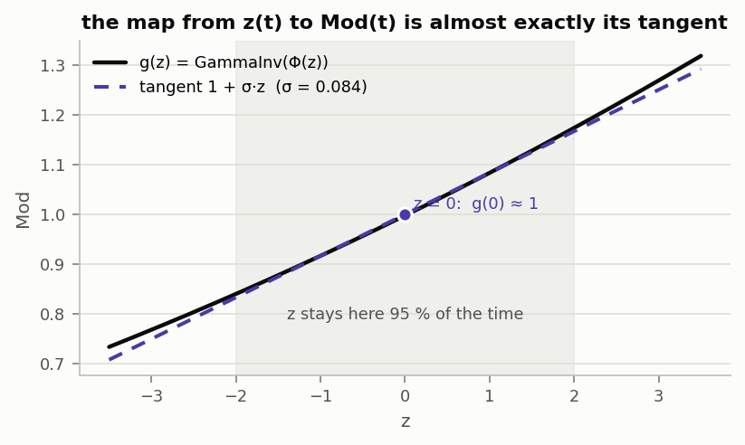
  <figcaption><b>Figure 12.</b> The map g(z) = GammaInv(Φ(z)) (black) and its
  tangent at z = 0, the line 1 + σ·z (violet dashed), for the running example's
  σ = 0.0835. Shaded: |z| ≤ 2, where the unit-variance z(t) sits 95 % of the
  time; there the curve and the line differ by less than 0.007 (the table
  above). The linearisation Mod(t) ≈ 1 + σ·z(t) is this substitution of the
  line for the curve.</figcaption>
</figure>
<p>
Inside ±2 (95 % of the time) the curve and its tangent differ by less than
0.007 (Fig. 12) — and the mismatch shrinks with σ, which is what "to leading
order" / "for small σ" refers to: the neglected curvature terms carry higher
powers of σ. With that,
</p>
<pre><code>D = p̄·Σ_t (Mod(t) − 1) ≈ (p̄·σ) · (z(1) + … + z(m))
                         └─┬─┘   └───────┬───────┘
                  constant factor the random part</code></pre>
<p>
Now the variance of D, in two standard steps. <em>First</em>, pulling a
constant out of a variance squares it: Var(c·X) = c²·Var(X). That is because
variance is the average <em>squared</em> deviation — multiplying a random
quantity by c makes every deviation c times larger, and squaring the
deviations turns that into c². Here the constant is c = p̄·σ, giving the
factor p̄²·σ². <em>Second</em>, what remains is Var(z(1) + … + z(m)) — how
much shared wobble accumulates over one window. Give that quantity a name,
</p>
<pre><code>W(m) = Var[z(1) + … + z(m)]</code></pre>
<p>
Together, result <strong>(R4): Var(D) = p̄²·σ²·W(m)</strong>.
(Why is W(m) not simply m times the variance of one z?
Because "variance of a sum = sum of variances" holds only for
<em>independent</em> terms. The z values are AR(1)-correlated, so all the
pairwise covariances between different bins add on top: with no memory
(τ_c = 0) they vanish and W(m) = m; with memory, consecutive z values
reinforce each other and W(m) grows toward m² for windows shorter than τ_c —
15 092 instead of 200 in the running example.)
</p>
<p>
<em>How W(m) is actually computed.</em> Purely analytically — no z is ever
simulated for it, no averaging over repeated sequences. The variance of a sum
is the sum of all pairwise covariances, and for a unit-variance AR(1) every
covariance is known in advance: Cov(z(s), z(t)) = a<sup>|s−t|</sup>, decaying
one factor of a per bin of lag. Organising the m² terms of the double sum by
lag:
</p>
<pre><code>W(m) = Σ_s Σ_t Cov(z(s), z(t))               # m² terms
     = m  +  2·Σ_{k=1…m−1} (m − k)·a^k       # m diagonal 1s; lag k occurs 2·(m−k) times
     = m + 2·(m·g − w)                       # geometric series, evaluated in closed form:
                                             #   g = a·(1 − a^(m−1)) / (1 − a)
                                             #   w = a·(1 − m·a^(m−1) + (m−1)·a^m) / (1 − a)²</code></pre>
<p>
<code>ou_sum_variance(m, a)</code> is exactly that last line — one formula
evaluation, exact and O(1), used because m is routinely 10 000 or more
(T_meas in the literature at dt = 0.1 ms). All three routes agree: for the
running example (m = 200, a = 0.9802) the naive lag sum gives 15 092.4, the
closed form 15 092.4, and a brute-force simulation — generate a long z(t),
chop it into 200-bin windows, take the empirical variance of the window sums —
gives ≈ 15 060, matching up to sampling error. So simulation is a way to
<em>check</em> W(m), but never how it is obtained.
</p>
<p>
<em>The variance of one count.</em> One piece is still missing for the
correlation: Var(K). It comes from the same decomposition (R2): a count's
deviation from its overall mean m·p̄ is D + noise, and the average of its
<em>square</em> splits exactly like the covariance did — the cross term
2·E[D·noise] vanishes for the same reason as before (noise has mean 0 given
the path, independent of it). What remains are the two variances already
computed, (R4) and (R1):
</p>
<pre><code>Var(K) = E[(D + noise)²] = Var(D) + Var(noise)
       = p̄²·σ²·W(m) + m·p̄                        # (R5) = (R4) + (R1)</code></pre>
<p>
Putting the pieces together — (R3) over (R5):
</p>
<pre><code>r_sc(T) = Cov(K₁, K₂) / Var(K)                    # (R3) / (R5)
        = p̄²·σ²·W(m) / (m·p̄ + p̄²·σ²·W(m))       # divide through by p̄:
        = p̄·σ²·W(m) / (m + p̄·σ²·W(m))            # with m = T/dt</code></pre>
<p>
Note what came out: not a single number but a <em>function of the counting
window</em>, m = T/dt. The same modulation produces a different measured
correlation at every window: summing counts over a longer window averages away
the independent (private) spiking noise but keeps the shared slow modulation,
so the correlation grows with T and saturates once T exceeds τ_c — the curve
of Fig. 13.
</p>
<figure id="fig13">
  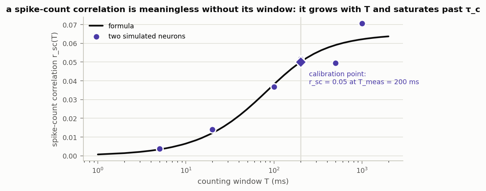
  <figcaption><b>Figure 13.</b> r_sc(T) for the modulation of Fig. 11: the
  closed form above (black) and two simulated presynaptic neurons sharing that
  Mod(t) (violet points; 2·10⁶ bins, counts correlated at windows
  T = 5 … 1000 ms). The calibration point (diamond) is where the curve was
  pinned: r_sc(T_meas = 200 ms) = 0.05. The same modulation yields r_sc ≈ 0.004
  at a 5 ms window and ≈ 0.06 at 1 s — a literature value is meaningless without
  its window, which is why <code>correlation_window_ms</code> is required as
  soon as any correlation target is non-zero. The largest window has only 2 000
  samples, hence its scatter.</figcaption>
</figure>
<p>
This is why T_meas had to be named as an input back at the start: the same σ²
yields the whole curve, and a target r_sc pins it at one point only. The
calibration is the formula read backwards — demand that the curve pass through
the target at the measured window, r_sc(T_meas) = target, and solve for σ²
(multiply out, collect the σ² terms):
</p>
<pre><code>σ² = r_sc · m / ((1 − r_sc) · p̄ · W(m))          # m = T_meas/dt: pins the diamond of Fig. 13</code></pre>
<p>
That single number is what the calibration hands to the generation pipeline of
Fig. 11.
</p>
<h3>Worked example</h3>
<p>
The exact numbers behind Fig. 11. Given: the
target r_sc = 0.05 measured at T_meas = 200 ms, timescale τ_c = 50 ms, a
constant 100 Hz drive, dt = 1 ms. Step by step
(<code>solve_modulation_amplitude</code> reproduces these to all digits):
</p>
<pre><code># given:  r_sc = 0.05,  T_meas = 200 ms,  τ_c = 50 ms,  rate = 100 Hz,  dt = 1 ms

m    = T_meas / dt        = 200 / 1                       = 200 bins
a    = exp(−dt/τ_c)       = exp(−1/50)                    = 0.9802
p̄    = rate · dt / 1000   = 100 · 1 / 1000                = 0.1
W(m) = ou_sum_variance(200, 0.9802)                       = 15 092
       # 75× larger than the memoryless W = m = 200: within a 200 ms window the
       # 50 ms memory makes consecutive z values reinforce instead of cancel

σ²   = r_sc · m / ((1 − r_sc) · p̄ · W(m))
     = 0.05 · 200 / (0.95 · 0.1 · 15 092)
     = 10 / 1433.8                                        = 0.00697</code></pre>
<p>
So the modulation needs a standard deviation of only σ = √0.00697 ≈ 0.08 — an
8 % waxing and waning of the firing probability — to produce a 0.05 spike-count
correlation at a 200 ms window. Sanity check forwards: with these numbers the
shared part of the r_sc formula is p̄·σ²·W(m) = 0.1 · 0.00697 · 15 092 ≈ 10.5
against the private part m = 200, and 10.5 / (200 + 10.5) = 0.05 — the target,
recovered. This σ² = 0.007 is the value Fig. 11's panel 4 is drawn with.
</p>
<p>
Loose end tied back to section 1: the single-bin presynaptic correlation ρ that
appears in the target formulas there is this same modulation evaluated at the
single-bin window, ρ = p̄·σ²/(1 − p̄); at σ = 0 it vanishes and the targets
reduce to Fano = 1 − p, corr = f — the shipped configuration.
</p>

<h2 id="perf">7 · Time and memory at real scale</h2>
<p>
Table 5 gives measured costs of the real generators at true per-stream scale: real
M, N, R and dt, one TR of bins (23 100), float64 memmaps as in the real cache.
Measured on this laptop (8 logical cores, 15 GB RAM), one phase per fresh process;
peak RSS is the process high-water mark (<code>VmHWM</code>; baseline after
imports ≈ 44 MB).
</p>
<div class="table-scroll"><table id="tab5">
<caption><b>Table 5.</b> Measured wall time, peak memory and bytes written per
phase, each in its own subprocess (<code>bench_real_scale.py</code>; raw values
in <code>bench.json</code>). All phases together stay below 0.6 GB peak — cache
building is disk-bound, not RAM-bound, and a full-length build streams chunk by
chunk at the same peak.</caption>
<tr><th>phase (real parameters)</th><th class="num">wall</th><th class="num">peak RSS</th><th class="num">disk written</th></tr>
<tr><td>1a — dlPFC pool, all 3 caudate streams, 1 TR (M = 275 000, R = 486+485+29)</td><td class="num">3.96 s</td><td class="num">486 MB</td><td class="num">185 MB</td></tr>
<tr><td>1b — build iSPN→dSPN source cloud (72 971 sources, 486 receivers)</td><td class="num">2.18 s</td><td class="num">217 MB</td><td class="num">—</td></tr>
<tr><td>1b — iSPN→dSPN stream, 1 TR</td><td class="num">2.31 s</td><td class="num">586 MB</td><td class="num">90 MB</td></tr>
<tr><td>1c — thal ← dlPFC stream, 1 TR (R = 100, N = 550)</td><td class="num">1.08 s</td><td class="num">304 MB</td><td class="num">18 MB</td></tr>
</table></div>
<p>
Inside case 1a the cost is almost entirely the hypergeometric draw: per 5 592-bin
chunk, <code>k ~ Binomial(M, p)</code> takes 0.5 ms, the dSPN hypergeometric
349 ms, the memmap write 64 ms. So ~85 % of cache-build time for the cortical
streams is <code>rng.hypergeometric</code>, which also means build time scales with
R × n_steps and barely with M. Table 6 extrapolates the measurements linearly in
n_steps and compares them with the known aggregates.
</p>
<div class="table-scroll"><table id="tab6">
<caption><b>Table 6.</b> Extrapolation of Table 5 (linear in n_steps: a caudate
cache build is 6 regions × phase 1a + 7 × phase 1b + 24 × phase 1c per TR)
against the aggregates recorded in CLAUDE.md. The disk figures agree exactly
because they are pure arithmetic — R × n_steps × 8 bytes per stream in the
current float64/per-region layout (<code>TODO.md</code> §3 holds the agreed
smaller layout, ~120 GiB per condition). The time figures land in the right
range; the recorded aggregates come from a different machine state, and
per-stream costs are uneven across regions and pairs.</caption>
<tr><th>quantity</th><th class="num">this laptop, extrapolated</th><th class="num">known aggregate</th></tr>
<tr><td>caudate loop, one DBS condition, 5 TRs</td><td class="num">≈ 6 min</td><td class="num">≈ 4 min per loop</td></tr>
<tr><td>one DBS condition, both loops, full 310 TRs</td><td class="num">≈ 11 h</td><td class="num">≈ 7 h</td></tr>
<tr><td>disk, one condition (both loops), 5 TRs</td><td class="num">≈ 22 GB</td><td class="num">≈ 22 GB ✓</td></tr>
<tr><td>disk, one condition, full length</td><td class="num">≈ 1.3 TB</td><td class="num">≈ 1.25 TiB ✓</td></tr>
</table></div>
<p>
The practical readings: no phase peaked above 0.6 GB, so cache building fits any
machine and is limited by disk, and a full-length cache belongs on the
workstations' <code>/scratch</code>, not this laptop's disk.
</p>

<p class="foot">
Sources of truth: <code>model_v07.md</code> §7.4–7.5, <code>DBS.md</code>,
<code>experimental_data/input_streams/README.md</code> (the stream contract),
<code>CompNeuroPy/striatal_microcircuit/spike_input_cortex.py</code> (all three
generators). Figures, numbers and benchmarks regenerate with
<code>make_figures.py</code> and <code>bench_real_scale.py</code> in this folder
(compneuro interpreter); measured values live in <code>results.json</code> and
<code>bench.json</code>. Toy randomness is seeded — the page is reproducible
bit-for-bit.
</p>
</main>
